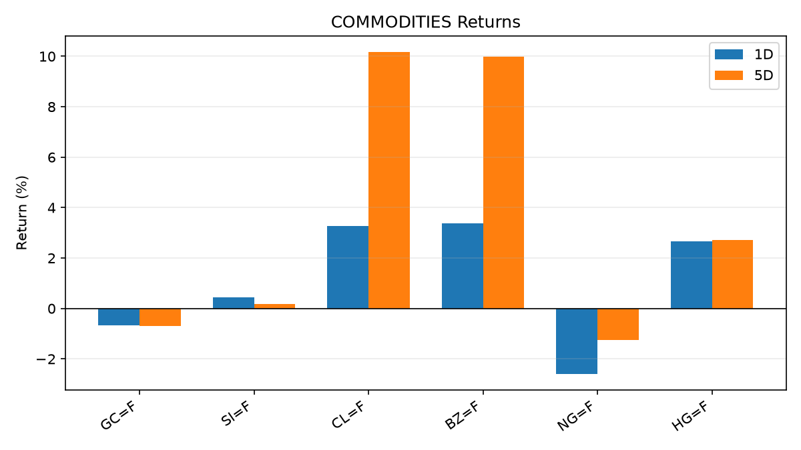
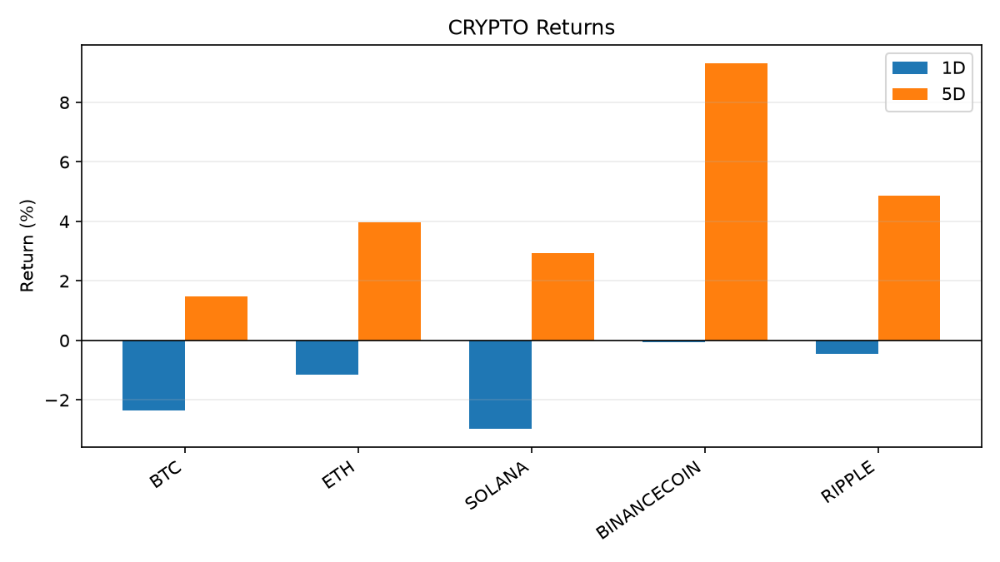
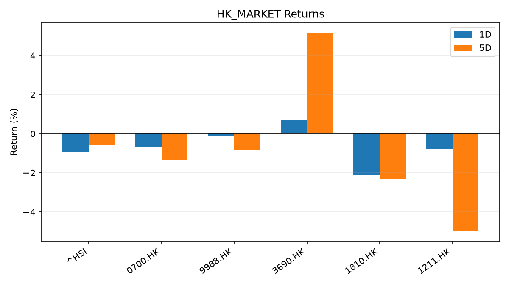
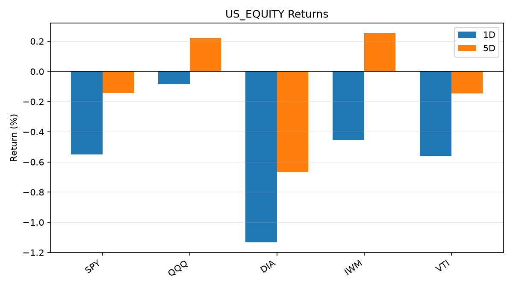
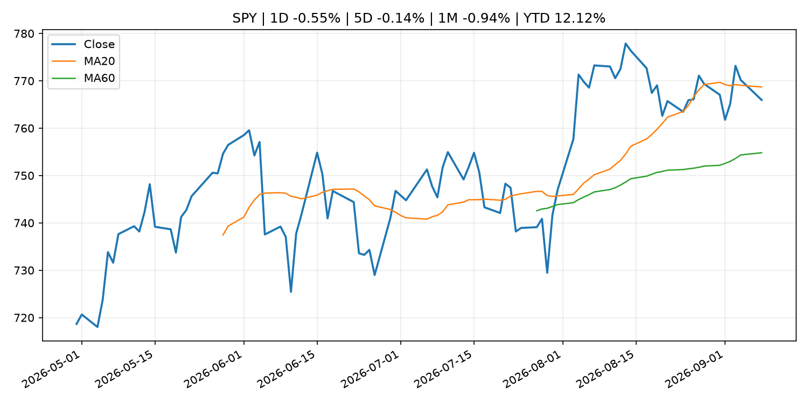
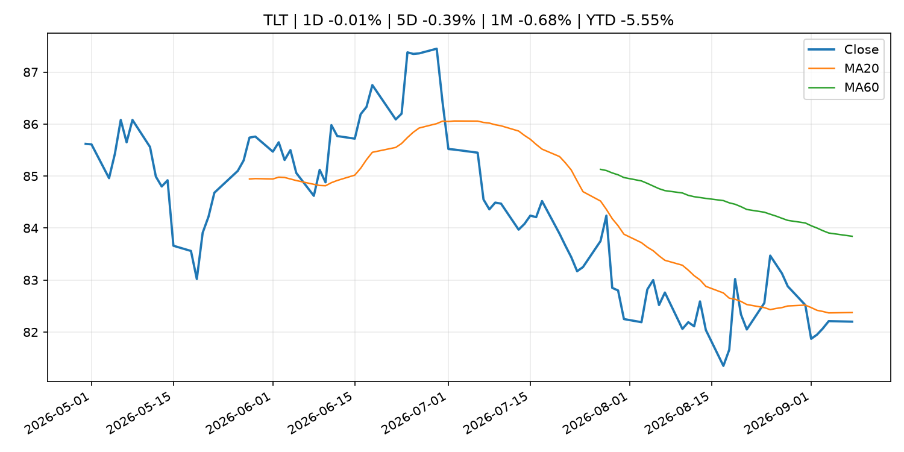
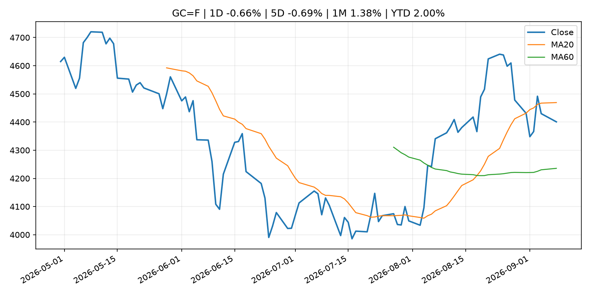
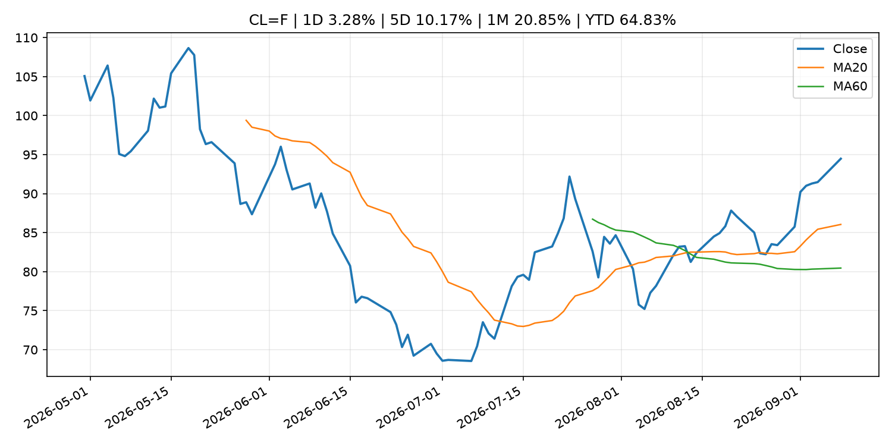
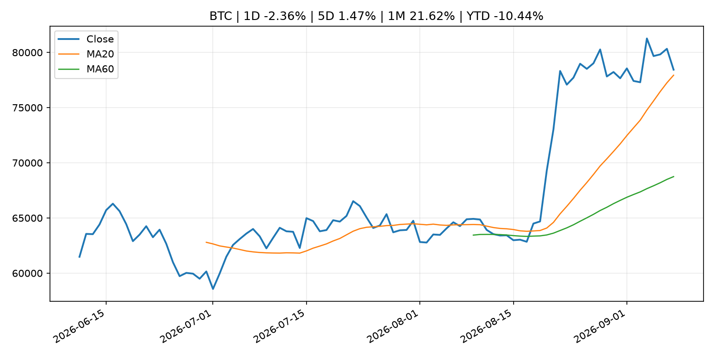

今日主线
Top themes
- fiscal_policy: Stablecoins could save South Korean merchants up to $3.8 billion a year, budget office says
- earnings: Qualcomm’s stock climbs as Amazon chip deal offers investors much-needed good news
- crypto_market_structure: Visa combines VisaNet data with onchain lending to power stablecoin card working capital
核心资产
1D snapshot · 2026-09-09
美股 SPY
-0.55%
QQQ
-0.08%
VIX
2.75%
BTC
-2.36%
Gold
-0.66%
Oil
3.28%
异动雷达
按 1D 绝对波动排序 · 2026-09-09
BZ=F
COMMODITIES · strong_uptrend · 99.52
3.37%
CL=F
COMMODITIES · strong_uptrend · 94.48
3.28%
SOLANA
CRYPTO · strong_uptrend · 103.34
-2.96%
^VIX
US_MACRO_MARKET · range_bound · 15.72
2.75%
HG=F
COMMODITIES · strong_uptrend · 6.77
2.65%
NG=F
COMMODITIES · range_bound · 2.90
-2.59%
BTC
CRYPTO · uptrend · 78,434.45
-2.36%
1810.HK
HK_MARKET · range_bound · 26.92
-2.11%
Must Read
优先阅读
财政和贸易政策会影响增长、通胀、企业利润和跨境资本流。
Tier 1
CoinDesk
fiscal_policy
low
大型科技股盈利和资本开支会影响纳指、半导体和 AI 交易主线。
Tier 2
MarketWatch Top Stories
earnings
high
AMZN
GOOGL
META
MSFT
NVDA
加密市场结构和监管变化会影响 BTC、ETH 及相关股票的风险溢价。
Tier 2
CoinDesk
crypto_market_structure
high
BTC
COIN
ETH
crypto market
加密市场结构和监管变化会影响 BTC、ETH 及相关股票的风险溢价。
Tier 2
CNBC Economy
crypto_market_structure
high
BTC
COIN
ETH
crypto market
图表面板
Summary charts · 2026-09-09

COMMODITIES

CRYPTO

HK_MARKET

US_EQUITY
Global Macro Morning Briefing - 2026-09-09
Not financial advice / 非投资建议。
0. 今日总览
- 市场状态：unknown。市场信号不足，暂不判断明确状态。
- 今日三大主线：
- fiscal_policy: Stablecoins could save South Korean merchants up to $3.8 billion a year, budget office says
- earnings: Qualcomm’s stock climbs as Amazon chip deal offers investors much-needed good news
- crypto_market_structure: Visa combines VisaNet data with onchain lending to power stablecoin card working capital
- 一句话结论：今日晨报重点关注：财政和贸易政策会影响增长、通胀、企业利润和跨境资本流。；大型科技股盈利和资本开支会影响纳指、半导体和 AI 交易主线。。跨资产方面，SPY 1D -0.55%；QQQ 1D -0.08%；^VIX 1D 2.75%；TLT 1D -0.01%；GC=F 1D -0.66%；CL=F 1D 3.28%；BTC 1D -2.36%；ETH 1D -1.14%；市场信号不足，暂不判断明确状态。政策、通胀、利率、美元、美债、能源和加密监管仍是主要观察线索。所有结论仅基于公开数据与短摘要整理，不构成投资建议。
1. 隔夜跨资产市场
- 美股：SPY 1D -0.55%，QQQ 1D -0.08%，整体趋势需结合 VIX 和利率确认。
- 美债/美元：TLT 1D -0.01%，美元指数 1D -0.35%，是判断折现率压力的核心线索。
- 黄金/原油：黄金 1D -0.66%，原油 1D 3.28%，用于观察避险、通胀和地缘风险。
- 加密：BTC 1D -2.36%，ETH 1D -1.14%，关注是否独立于纳指走出加密自身行情。
- 港股/A股：恒生 1D -0.93%，沪深300/上证 1D n/a，重点看中国政策预期与人民币线索。
- 风险观察：关注后续数据是否确认当前跨资产信号。
US_EQUITY
| symbol |
latest close |
1D |
5D |
1M |
YTD |
trend |
| SPY |
765.96 |
-0.55% |
-0.14% |
-0.94% |
12.12% |
range_bound |
| QQQ |
718.36 |
-0.08% |
0.22% |
-0.65% |
17.16% |
uptrend |
| DIA |
528.03 |
-1.13% |
-0.67% |
-2.15% |
9.18% |
range_bound |
| IWM |
294.67 |
-0.45% |
0.25% |
-2.28% |
18.45% |
range_bound |
| VTI |
377.60 |
-0.56% |
-0.15% |
-1.09% |
12.28% |
range_bound |
US_MACRO_MARKET
| symbol |
latest close |
1D |
5D |
1M |
YTD |
trend |
| ^VIX |
15.72 |
2.75% |
-3.79% |
1.68% |
8.34% |
range_bound |
| DX-Y.NYB |
98.81 |
-0.35% |
-0.63% |
-0.80% |
0.39% |
downtrend |
| TLT |
82.20 |
-0.01% |
-0.39% |
-0.68% |
-5.55% |
downtrend |
| IEF |
92.16 |
-0.10% |
-0.63% |
-1.08% |
-4.08% |
downtrend |
COMMODITIES
| symbol |
latest close |
1D |
5D |
1M |
YTD |
trend |
| GC=F |
4,400.70 |
-0.66% |
-0.69% |
1.38% |
2.00% |
range_bound |
| SI=F |
66.35 |
0.45% |
0.19% |
4.76% |
-5.97% |
range_bound |
| CL=F |
94.48 |
3.28% |
10.17% |
20.85% |
64.83% |
strong_uptrend |
| BZ=F |
99.52 |
3.37% |
9.98% |
19.11% |
63.82% |
strong_uptrend |
| NG=F |
2.90 |
-2.59% |
-1.26% |
8.87% |
-19.90% |
range_bound |
| HG=F |
6.77 |
2.65% |
2.71% |
3.07% |
20.07% |
strong_uptrend |
HK_MARKET
| symbol |
latest close |
1D |
5D |
1M |
YTD |
trend |
| ^HSI |
25,413.12 |
-0.93% |
-0.60% |
-0.99% |
-3.51% |
range_bound |
| 0700.HK |
435.40 |
-0.68% |
-1.36% |
-9.56% |
-30.11% |
strong_downtrend |
| 9988.HK |
109.50 |
-0.09% |
-0.82% |
-13.58% |
-26.51% |
range_bound |
| 3690.HK |
80.60 |
0.69% |
5.15% |
-14.16% |
-22.94% |
range_bound |
| 1810.HK |
26.92 |
-2.11% |
-2.32% |
-2.53% |
-33.17% |
range_bound |
| 1211.HK |
83.85 |
-0.77% |
-4.99% |
-9.15% |
-15.09% |
range_bound |
CRYPTO
| symbol |
latest close |
1D |
5D |
1M |
YTD |
trend |
| BTC |
78,434.45 |
-2.36% |
1.47% |
21.62% |
-10.44% |
uptrend |
| ETH |
2,485.36 |
-1.14% |
3.96% |
29.97% |
-16.32% |
uptrend |
| SOLANA |
103.34 |
-2.96% |
2.94% |
36.02% |
-17.01% |
strong_uptrend |
| BINANCECOIN |
752.34 |
-0.05% |
9.32% |
24.30% |
-12.79% |
strong_uptrend |
| RIPPLE |
1.42 |
-0.46% |
4.87% |
41.27% |
-23.06% |
uptrend |
2. 今日最重要的 10 条新闻
1. Stablecoins could save South Korean merchants up to $3.8 billion a year, budget office says
2. Qualcomm’s stock climbs as Amazon chip deal offers investors much-needed good news
- 来源：MarketWatch Top Stories
- 时间：2026-09-08T21:32:00+00:00
- 地区：US
- 事件类型：earnings
- 重要性层级：Tier 2
- 一句话摘要：Qualcomm shares have missed out on the chip sector’s rally this year — but the company is now working on various chip projects with Amazon.
- 为什么重要：大型科技股盈利和资本开支会影响纳指、半导体和 AI 交易主线。
- 可能影响：主要影响 QQQ，方向为 mixed，强度 high；AI 资本开支会影响大型科技股盈利和估值预期。
- 资产：QQQ
方向：mixed
强度：high
原因：AI 资本开支会影响大型科技股盈利和估值预期。
- 资产：SMH
方向：mixed
强度：high
原因：AI 投资周期直接影响半导体需求。
- 资产：NVDA
方向：mixed
强度：high
原因：AI 训练和推理需求是英伟达收入预期核心变量。
- 资产：MSFT
方向：mixed
强度：medium
原因：云和 AI 资本开支影响利润率与增长叙事。
- 资产：GOOGL
方向：mixed
强度：medium
原因：AI 投资和搜索商业化影响估值。
- 资产：META
方向：mixed
强度：medium
原因：AI 基建支出与广告效率共同影响市场预期。
- 原文链接：https://www.marketwatch.com/story/qualcomms-stock-climbs-as-amazon-chip-deal-offers-investors-some-much-needed-good-news-5b6a95ca?mod=mw_rss_topstories
3. Visa combines VisaNet data with onchain lending to power stablecoin card working capital
4. Visa tells CNBC it is expanding data offering for blockchain lenders as demand for stablecoin-linked cards surges
- 来源：CNBC Economy
- 时间：2026-09-08T11:30:01+00:00
- 地区：US
- 事件类型：crypto_market_structure
- 重要性层级：Tier 2
- 一句话摘要：Visa is doubling down on blockchain-powered financial services with a new program to help issuers of stablecoin-linked cards access loans.
- 为什么重要：加密市场结构和监管变化会影响 BTC、ETH 及相关股票的风险溢价。
- 可能影响：主要影响 BTC，方向为 mixed，强度 high；加密监管或 ETF 进展会改变 BTC 的资金流和风险溢价。
- 资产：BTC
方向：mixed
强度：high
原因：加密监管或 ETF 进展会改变 BTC 的资金流和风险溢价。
- 资产：ETH
方向：mixed
强度：high
原因：监管框架会影响 ETH 产品化和机构参与度。
- 资产：COIN
方向：mixed
强度：medium
原因：监管清晰度和执法风险会影响交易平台估值。
- 资产：crypto market
方向：mixed
强度：high
原因：信息影响整个加密市场结构，但方向取决于细节。
- 原文链接：https://www.cnbc.com/2026/09/08/visa-blockchain-lender-stablecoin-cards.html
5. Stablecoin wallets challenge traditional bank accounts as main consumer money hub
- 来源：CoinDesk
- 时间：2026-09-07T14:12:15+00:00
- 地区：global
- 事件类型：crypto_market_structure
- 重要性层级：Tier 2
- 一句话摘要：Stablecoin wallets challenge traditional bank accounts as main consumer money hub
- 为什么重要：加密市场结构和监管变化会影响 BTC、ETH 及相关股票的风险溢价。
- 可能影响：主要影响 BTC，方向为 mixed，强度 high；加密监管或 ETF 进展会改变 BTC 的资金流和风险溢价。
- 资产：BTC
方向：mixed
强度：high
原因：加密监管或 ETF 进展会改变 BTC 的资金流和风险溢价。
- 资产：ETH
方向：mixed
强度：high
原因：监管框架会影响 ETH 产品化和机构参与度。
- 资产：COIN
方向：mixed
强度：medium
原因：监管清晰度和执法风险会影响交易平台估值。
- 资产：crypto market
方向：mixed
强度：high
原因：信息影响整个加密市场结构，但方向取决于细节。
- 原文链接：https://www.coindesk.com/business/2026/09/07/stablecoin-wallets-challenge-traditional-bank-accounts-as-main-consumer-money-hub
6. Frank Elderson: Fireside chat
7. Bitcoin rally has more room as volatility shorts unwind, Two Prime CEO says
3. 政策与央行观察
1. Stablecoins could save South Korean merchants up to $3.8 billion a year, budget office says
2. Visa combines VisaNet data with onchain lending to power stablecoin card working capital
3. Visa tells CNBC it is expanding data offering for blockchain lenders as demand for stablecoin-linked cards surges
- 来源：CNBC Economy
- 时间：2026-09-08T11:30:01+00:00
- 地区：US
- 事件类型：crypto_market_structure
- 重要性层级：Tier 2
- 一句话摘要：Visa is doubling down on blockchain-powered financial services with a new program to help issuers of stablecoin-linked cards access loans.
- 为什么重要：加密市场结构和监管变化会影响 BTC、ETH 及相关股票的风险溢价。
- 可能影响：主要影响 BTC，方向为 mixed，强度 high；加密监管或 ETF 进展会改变 BTC 的资金流和风险溢价。
- 资产：BTC
方向：mixed
强度：high
原因：加密监管或 ETF 进展会改变 BTC 的资金流和风险溢价。
- 资产：ETH
方向：mixed
强度：high
原因：监管框架会影响 ETH 产品化和机构参与度。
- 资产：COIN
方向：mixed
强度：medium
原因：监管清晰度和执法风险会影响交易平台估值。
- 资产：crypto market
方向：mixed
强度：high
原因：信息影响整个加密市场结构，但方向取决于细节。
- 原文链接：https://www.cnbc.com/2026/09/08/visa-blockchain-lender-stablecoin-cards.html
4. Stablecoin wallets challenge traditional bank accounts as main consumer money hub
- 来源：CoinDesk
- 时间：2026-09-07T14:12:15+00:00
- 地区：global
- 事件类型：crypto_market_structure
- 重要性层级：Tier 2
- 一句话摘要：Stablecoin wallets challenge traditional bank accounts as main consumer money hub
- 为什么重要：加密市场结构和监管变化会影响 BTC、ETH 及相关股票的风险溢价。
- 可能影响：主要影响 BTC，方向为 mixed，强度 high；加密监管或 ETF 进展会改变 BTC 的资金流和风险溢价。
- 资产：BTC
方向：mixed
强度：high
原因：加密监管或 ETF 进展会改变 BTC 的资金流和风险溢价。
- 资产：ETH
方向：mixed
强度：high
原因：监管框架会影响 ETH 产品化和机构参与度。
- 资产：COIN
方向：mixed
强度：medium
原因：监管清晰度和执法风险会影响交易平台估值。
- 资产：crypto market
方向：mixed
强度：high
原因：信息影响整个加密市场结构，但方向取决于细节。
- 原文链接：https://www.coindesk.com/business/2026/09/07/stablecoin-wallets-challenge-traditional-bank-accounts-as-main-consumer-money-hub
4. 市场异动与图表
- SPY 下跌 -0.55%
- DXY 下跌 -0.35%
- Gold 下跌 -0.66%
- Oil 上涨 3.28%
- BTC 下跌 -2.36%
SPY

QQQ

^VIX

TLT

GC=F

CL=F

BTC

ETH

^HSI

5. 华尔街与机构公开观点
6. 今日重点关注
- 经济数据：经济数据：暂无可靠公开日历数据；如配置经济日历源后可自动填充。
- 央行讲话：央行讲话：暂无可靠公开日历数据；重点跟踪 Fed、ECB、BoJ、PBOC 官网 RSS。
- 财报：财报：暂无可靠数据。
- 政策事件：政策事件：暂无可靠数据。
- 风险提醒：风险提醒：关注数据源失败项、突发地缘风险、利率和美元的二阶反应。
7. 英文金融表达与宏观概念
- market structure：市场结构，指交易、托管、清算、ETF、监管等制度安排。 例句：Crypto market structure rules can affect institutional participation.
- inflation expectations：通胀预期，指家庭、企业或市场对未来通胀的预估。 例句：Inflation expectations can shape wage bargaining and bond yields.
- real yield：实际收益率，名义利率扣除通胀预期后的收益率。 例句：Gold often reacts more to real yields than nominal yields.
- terminal rate：终端利率，市场预期本轮加息周期的最高政策利率。 例句：A higher terminal rate can pressure growth stocks.
- soft landing：软着陆，指通胀回落而经济避免明显衰退。 例句：Markets often rally when data support a soft landing.
- risk-off：避险模式，资金偏向美元、国债、黄金等防御资产。 例句：A geopolitical shock can push markets into risk-off mode.
8. 背景材料
- Frank Elderson: Fireside chat（ECB Press Releases，other）：Frank Elderson: Fireside chat
- Bitcoin rally has more room as volatility shorts unwind, Two Prime CEO says（CoinDesk，other）：Bitcoin rally has more room as volatility shorts unwind, Two Prime CEO says
- Bitcoin’s complexity paradox: How layer-2 scalers became AI's main target（CoinDesk，other）：Bitcoin’s complexity paradox: How layer-2 scalers became AI's main target
- Bitcoin ETFs are still $1 billion shy of breaking even in 2026（CoinDesk，other）：Bitcoin ETFs are still $1 billion shy of breaking even in 2026
- Bitcoin slips to $78,800 as BNB and DeFi tokens buck the selloff（CoinDesk，other）：Bitcoin slips to $78,800 as BNB and DeFi tokens buck the selloff
- Live updates: Bitcoin slips below $78,500 as stocks close lower（CoinDesk，other）：Live updates: Bitcoin slips below $78,500 as stocks close lower
- Crypto platforms have lost over $3.63 billion to cyberattacks — even though most of them did security checks（CNBC Economy，other）：More than 60% of cryptocurrency platforms that lost money due to cyberattacks had undergone independent security audits, CoinGecko said.
- Bitcoin’s golden cross is here（CoinDesk，other）：Bitcoin’s golden cross is here
- Liquid Network gets back 3,400 bitcoin from whitehat hackers; talks underway for the rest（CoinDesk，other）：Liquid Network gets back 3,400 bitcoin from whitehat hackers; talks underway for the rest
- Bitcoin slips under $79,000, Zcash leads losses as Fed hike odds hold near 60%（CoinDesk，other）：Bitcoin slips under $79,000, Zcash leads losses as Fed hike odds hold near 60%
- Principal Figures of Financial Institutions (Aug.)（Bank of Japan Announcements，other）：Principal Figures of Financial Institutions (Aug.)
- Polish prosecutors charge fifth suspect in a massive crypto probe（CoinDesk，other）：Polish prosecutors charge fifth suspect in a massive crypto probe
- Amounts Outstanding in the Call Money Market (Aug.)（Bank of Japan Announcements，other）：Amounts Outstanding in the Call Money Market (Aug.)
- Consumption Activity Index（Bank of Japan Announcements，other）：Consumption Activity Index
- Monetary Base and the Bank of Japan's Transactions (Aug.)（Bank of Japan Announcements，other）：Monetary Base and the Bank of Japan's Transactions (Aug.)
- Bank of Japan's Transactions with the Government (Aug.)（Bank of Japan Announcements，other）：Bank of Japan's Transactions with the Government (Aug.)
- Market Operations by the Bank of Japan (Aug.)（Bank of Japan Announcements，other）：Market Operations by the Bank of Japan (Aug.)
9. 数据源、失败项与免责声明
- 采集时间：2026-09-08T23:50:54
- 数据源：公开 RSS、Yahoo Finance、CoinGecko、AKShare、FRED、SEC data.sec.gov，以及用户自有 inputs/reports 文件。
- 合规说明：不绕过 WSJ、Bloomberg、FT、Reuters 等付费墙；对付费媒体只使用公开 RSS 标题、摘要、链接和发布时间。
- 免责声明：Not financial advice / 非投资建议。本项目仅供个人学习、研究和信息整理，不构成投资建议、交易建议或任何收益承诺。
- 失败或跳过的数据源：
- crypto data failed coin=dogecoin
- China market data failed symbol=上证指数: empty dataframe
- China market data failed symbol=深证成指: empty dataframe
- China market data failed symbol=创业板指: empty dataframe
- China market data failed symbol=沪深300: empty dataframe
- China market data failed symbol=中证500: empty dataframe
- China market data failed symbol=科创50: empty dataframe
- FRED_API_KEY not set; skipping FRED macro series
- SEC failed cik=0000320193
- SEC failed cik=0000789019
- SEC failed cik=0001045810
- SEC failed cik=0001318605
- SEC failed cik=0001577552